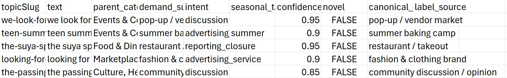
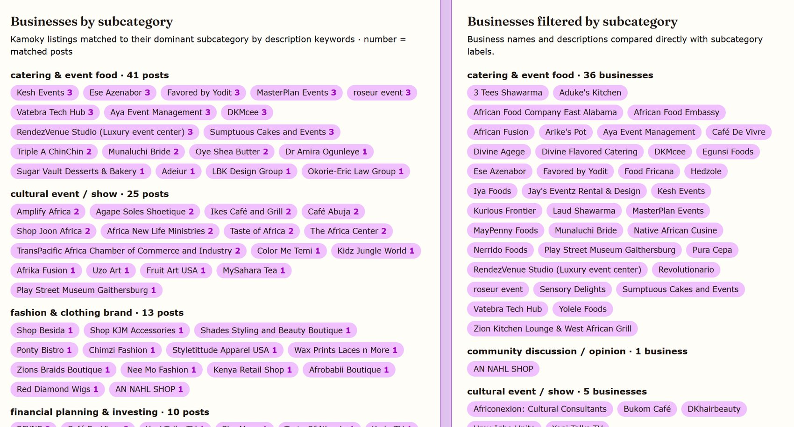

Kamoky: Ethnic Media
Kamoky Team Analytics Dashboard (Live Service)
Over the summer of 2026, I worked as the lead Data & Product employee for the first-ever ethnic and diaspora social media company, headquartered in Baltimore. One of my main tasks was to develop a dashboard for the CEO that enables a more descriptive outlook into what's happening on the app than the current free service the team uses (Mixpanel).
Immediately, I noticed that Mixpanel can log posts that appear on the app, but it can't classify them into categories at all. As a result, the team can't know which topics are the most popular on the app and which posts under them garner the most views.
What was most useful from Mixpanel was the database it stored regarding views on a post, the post text, duration the user stayed on the app, the date/timestamp a view was made, and info about the viewer like the general area they're from. Given my past experience structuring data with python libraries like pandas, I was able to deliver insights about the number of active users every day (filtering by unique users), weekly retention (tracking distinct users across weekly timestamps), top session times and in which cities, the peak hours of activity in the last 30 days (timestamped hour with most views), and the cities with the most active users (active user count grouped by city).
Since the CEO needed actionable info related to sales, I needed to couple these insights with the categories each post was labeled into so they could see where the user demand was. Here's how I initially assigned each post from the database into a category:
V1 — K-Means clustering for category creation (20 topics), trained HuggingFace SentenceTransformer for category assignment
I started with what I was familiar with: unsupervised learning using K-means. I trained a K-means model on the dataset's post slugs and plotted the inertias of every model from k=1 to k=275 (i.e. 275 clusters). I determined that the inertia didn't decrease significantly after k=20, meaning that the grouping wasn't getting much more accurate after 20 clusters. Shown are the clusters and an example post I extracted from each of them, along with the most viewed clusters.
Each post slug in the dataset now carried an additional column: their assigned cluster number. I trained a SentenceTransformers model from HuggingFace on this static dataset (with almost a year of post data), predicting cluster number from post text. Then I cached this model in a folder, calling it to classify any future posts that appear after the final date on the training dataset. Each cluster number correlates to a key phrase like “Jewelry” to describe the category (JSON file), assumed from what posts fall under the cluster.
While I could run the classification locally, I encountered a major RAM block when deploying it on a web service.
V2 — K-Means clustering with ONNX runtime (lower memory) for the trained SentenceTransformer
It took me some time to realize that the RAM issue was less about the size of the dataset exported from Mixpanel and more about the classification model.
I learned that HuggingFace's SentenceTransformers consumes about ~2–3 GB of RAM when pulled from the cache. For deploying a free web service, I had only about 512 MB of RAM to work with in total. I researched and found a file conversion method called Open Neural Network Exchange (ONNX), intended to reduce the memory usage of large trained models. After ONNX conversion, I could safely deploy the classification to a live web service that refreshes the Mixpanel-exported dataset every 10 minutes.
I utilized the additional cluster number for each newly classified post slug in order to group post data by city, month, and general view counts.
V3 — Anthropic Haiku for category creation (94 topics), SetFit classifier on ONNX runtime for category assignment
You likely noticed that the classification categories are quite broad. A specific post about ways to raise children to speak their mother tongue may get lost in Local Recs & Requests. It seemed clear that for the variety of different posts on Kamoky, 20 clusters was not enough. Thus, it was time to abandon K-Means and switch to a more comprehensive model: an LLM.
Anthropic's Haiku model is excellent for explaining posts into a short-form category. After running it through the past 6 months of data, as I found that around 4 or 5 months in the previous year have barely any post or viewer data, I received the post text and both the category and the intent of the post (e.g. advertisement, seeking service, discussion).

With Kamoky being a small company, I could sift through the 330 posts and check each text individually to verify the intent and label were both accurate. After doing so, I knew that for every subsequent new post on the app, I would have to run Haiku again, which can be expensive in the long run.
Instead, I trained a specific type of classifier called SetFit that works especially well with small datasets. The training dataset became the one generated by Haiku (above), with around 94 unique topics. For training on both label and intent, I ran 5-fold cross-validation to ensure the model was accurate on multiple training/testing splits.
Training took almost a day, but I came out with a model that is above 70% accuracy generally over the data. In the final analytics dashboard, I set a failsafe for this model misclassifying posts by showing through a dropdown which posts fell under the category and when. So far, I haven't seen any blatantly misclassified posts.
Additionally, the open-source SetFit GitHub repository contained information on how to create an ONNX model for each SetFit classifier you create. Thus, my final two models were “onnx_subcat” (subcategory) and “onnx_intent.”
V3.5 — Mimalloc and Docker container
Unfortunately, the final version of this dashboard still exceeded 512 MB at deployment. I researched deeper into the web and found a high-performance memory allocator developed by Microsoft called “Mimalloc.” This allocator could only be accessed under a Docker container, not Python3. So I ran my server file through the Docker, in which I installed “libmimalloc3”.
The final version of the dashboard now included a wider range of categories to classify each post. As you can see below, around 10 or more categories classify each new incoming post upon refresh, which makes sense given that the dashboard only refreshes on a 30-day (not 6 month) window.

In the end, the CEO of Kamoky was extremely satisfied with the dashboard, which is live and refreshing to this day. The dashboard offers a real-time look into the data analysis I had also covered for our Diaspora Insights report, presented to members of U.S.-African government consultancies.